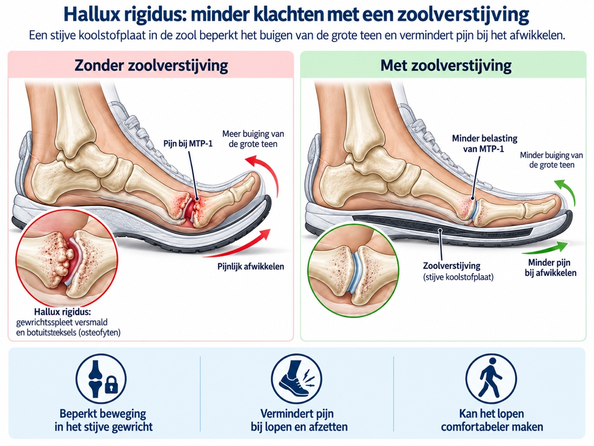

Wat is hallux rigidus?
De grote teen speelt een belangrijke rol bij het afwikkelen van de voet. Bij hallux rigidus is het gewricht aan de basis van de grote teen aangedaan door artrose. Het kraakbeen wordt dunner, het gewricht kan stijver worden en er kunnen botuitsteeksels ontstaan. Daardoor kan lopen pijnlijker worden, vooral wanneer de teen omhoog moet bewegen.

Welke klachten passen erbij?
Mensen merken vaak pijn bovenop of rond het grote-teengewricht. Soms ontstaat er een bult bovenop de voet waardoor schoenen drukken. Door de stijfheid kan iemand anders gaan lopen, waardoor ook andere delen van de voet gevoelig kunnen worden.
De klachten kunnen wisselen. Sommige mensen hebben vooral startpijn of pijn bij lange wandelingen. Anderen merken juist schoendruk, minder beweging van de teen of moeite met hurken, traplopen of sporten. Klachten en röntgenafwijkingen lopen niet altijd precies gelijk: het verhaal en het onderzoek blijven daarom belangrijk.
De keuze hangt af van klachten, onderzoek, röntgenfoto, gezondheid, schoenproblemen en wat iemand in het dagelijks leven wil kunnen doen.
Onderzoek en diagnose
De diagnose wordt meestal gesteld op basis van het verhaal, lichamelijk onderzoek en een belaste röntgenfoto. Tijdens het onderzoek wordt gekeken waar de pijn zit, hoeveel beweging er nog in het grote-teengewricht is, of er drukplekken zijn en hoe de voet afwikkelt. Ook schoenen, steunzolen, werkbelasting en sportbelasting kunnen relevant zijn.
Beeldvorming helpt om te zien hoeveel artrose er is en of er botaanwas rond het gewricht bestaat. Tegelijk blijft de klacht van de patiënt leidend: een röntgenfoto alleen bepaalt niet automatisch welke behandeling nodig is.
Eerst niet-operatieve behandeling
De behandeling begint meestal zonder operatie. Stevigere schoenen met voldoende ruimte bij de voorvoet, een afwikkelzool, zoolaanpassing of aangepaste belasting kunnen de druk op het gewricht verminderen. Deze maatregelen kunnen vaak al worden gestart voordat beoordeling door een orthopedisch chirurg nodig is, bijvoorbeeld met hulp van een podotherapeut, fysiotherapeut of schoentechnisch specialist.

Meer ruimte bij de voorvoet, stevige zool of afwikkelvoorziening kan de teen ontlasten.
Aanpassen van sport, werkbelasting of loopschema kan klachten verminderen.
Soms kan de eigen behandelaar pijnstilling of een injectie bespreken; het nut daarvan hangt af van de persoonlijke situatie.
Wanneer komt een operatie in beeld?
Als klachten blijven bestaan ondanks goede niet-operatieve maatregelen, kan een operatieve behandeling worden besproken. Welke operatie passend is, hangt af van de bewegelijkheid van het gewricht, de plaats van de pijn, de mate van artrose en wat iemand weer wil kunnen doen.
Elke operatie kent herstel, beperkingen en risico's. Daarom wordt de keuze afgestemd op de persoonlijke situatie, de bevindingen bij onderzoek en de verwachtingen die vooraf zijn besproken.
Cheilectomie
Bij minder vergevorderde artrose kan soms botaanwas worden verwijderd om druk en inklemming te verminderen. Het gewricht blijft daarbij behouden. De meeste mensen met hallux rigidus komen niet voor deze operatie in aanmerking.
MTP-1 artrodese
Bij duidelijke artrose kan vastzetten van het grote-teengewricht in geselecteerde situaties worden besproken als mogelijke behandeling voor pijn vanuit het gewricht, met verlies van beweging in dat gewricht.
Wat bespreek je tijdens een consult?
Tijdens een consult gaat het niet alleen om de röntgenfoto. Ook pijn, schoenen, werk, sport, eerdere behandelingen, gezondheid en verwachtingen tellen mee. Neem zo mogelijk gebruikte schoenen, steunzolen en informatie over eerdere behandelingen mee naar een beoordeling.

Waar kan je terecht?
De meeste voetklachten beginnen niet bij een orthopedisch chirurg. Bij nieuwe of niet-acute klachten is de huisarts vaak het eerste aanspreekpunt; afhankelijk van de situatie kunnen ook fysiotherapie, podotherapie of schoentechnische zorg een rol spelen.
Als specialistische beoordeling passend is, kan de verwijzer gericht naar mij verwijzen via de gebruikelijke zorgkanalen. Bij een verwijzing op mijn naam voer ik de beoordeling in principe zelf uit. De wachttijd kan daardoor soms langer zijn. Voor afspraken, planning, uitslagen en praktische ziekenhuisinformatie zijn de officiële ETZ-kanalen leidend.
Is hallux rigidus al elders vastgesteld of beoordeeld en is er behoefte aan een tweede mening, dan kan de verwijzer daarvoor ook gericht naar mij verwijzen. Ik beoordeel de situatie opnieuw; een tweede mening betekent niet automatisch dat de eerdere beoordeling of behandelrichting verandert.
Veelgestelde vragen
Is hallux rigidus hetzelfde als hallux valgus?
Nee. Hallux rigidus gaat vooral over artrose en stijfheid van het grote-teengewricht. Hallux valgus gaat over scheefstand van de grote teen. Beide kunnen wel samen voorkomen.
Kun je met hallux rigidus normaal blijven lopen?
Veel mensen kunnen met hallux rigidus blijven lopen, soms met aangepaste schoenen, zoolaanpassing of aangepaste belasting. Wat mogelijk is, hangt af van pijn, stijfheid, schoendruk en de manier waarop de voet afwikkelt.
Kun je nog hardlopen met hallux rigidus?
Dat verschilt per persoon. Schoen, zool, afstand en ondergrond kunnen uitmaken. Bij toenemende pijn, zwelling of duidelijke beperking is beoordeling door je eigen behandelaar verstandig.
Moet hallux rigidus altijd geopereerd worden?
Nee. Veel mensen starten met schoenaanpassing, zoolaanpassing, aanpassen van belasting of andere niet-operatieve maatregelen. Een operatie wordt pas besproken als klachten en beperkingen daar aanleiding toe geven.
Zijn er ook protheses voor het MTP-1-gewricht?
Ja, er bestaan protheses voor het MTP-1-gewricht. In de loop der jaren zijn verschillende modellen ontwikkeld en toegepast. Ik plaats deze protheses momenteel niet. Welke andere behandeling eventueel in beeld komt, hangt af van de klachten, het onderzoek en de verwachtingen.
Kan de grote teen na een MTP-1 artrodese nog bewegen?
Het vastgezette gewricht zelf beweegt dan niet meer. De voet kan in veel gevallen blijven functioneren doordat andere gewrichten meebewegen en doordat de stand van de teen zorgvuldig wordt gekozen. Wat dit praktisch betekent, moet persoonlijk besproken worden.
Wanneer is een cheilectomie passend?
Dat hangt onder meer af van de plek van de pijn, de hoeveelheid artrose en hoeveel beweging nog aanwezig is. Een cheilectomie is vooral een gewrichtssparende optie en past niet bij iedere vorm van hallux rigidus.